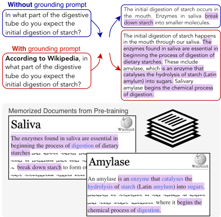
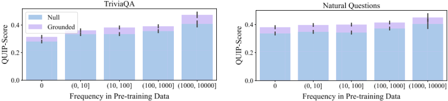
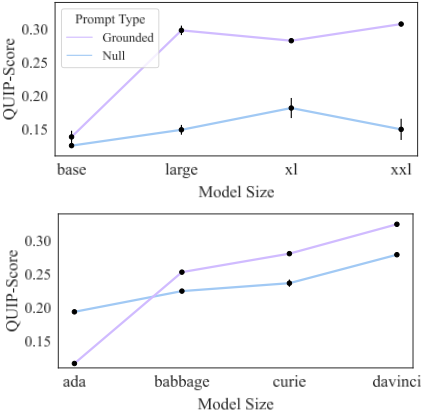
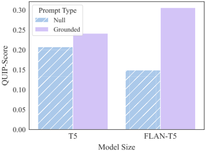

"According to ..."：通过提示让 LLM 更多引用预训练数据
LLM 即使在事实性语料上预训练仍会产生幻觉，已有检索增强方案在实践中也难以完全避免。论文受新闻写作"according to sources"启发，提出 according-to prompting：在任务提示后附加如 "Respond by using information from Wikipedia" 之类的指令短语，零样本引导模型逐字引用预训练语料（Wikipedia、PubMed、美国税法）中的原文，并配套提出基于 Bloom filter（DATA PORTRAIT）的高效指标 QUIP-Score，用字符 n-gram 精度量化生成文本与语料的逐字重合度。在 ELI5、NQ、TriviaQA、HotpotQA 及医学、法律数据集上，grounding 提示使 QUIP-Score 提升 5-105%，端任务性能保持甚至提升（NQ 最高 +6%）；anti-grounding 提示则降低 QUIP-Score，说明模型可按需增减 grounding。效果随模型规模与指令微调增强。
LLM 在预训练于大量事实性数据的情况下仍会生成虚假内容（幻觉），检索增强等方案在实践中依然存在幻觉问题。论文研究：能否不微调、不检索，仅通过提示引导 LLM 更多地逐字引用其预训练中见过的可信语料，从而减少幻觉；同时需要一种能高效扩展到 Wikipedia 级语料的"引用式 grounding"度量方法。
提出 according-to prompting：在原始任务提示后追加 grounding 指令短语（如 "Respond by using information from Wikipedia in your response"）或 anti-grounding 短语，测试模型能否按语义指令增减对目标语料的引用；并提出 QUIP-Score——基于 DATA PORTRAIT（用 Bloom filter 存储 25 字符 n-gram）的字符 n-gram 精度指标，支持对大规模语料的一次性索引与常数时间成员查询（朴素 hashtable 存 Wikipedia n-gram 约需 1.5TB 内存，Bloom filter 存 1 亿 n-gram 仅约 163MiB）。实验覆盖 open/closed 源模型（220M-175B）、多个 QA 与医学/法律数据集，并分析模型规模、实体流行度、指令微调对效果的影响。
所有评测模型上，grounding 提示使端任务性能与 QUIP-Score 相对 null 提示提升 5-105%
ChatGPT 上 according-to 提示端任务最高提升 6%（NQ）、2.5%（HotpotQA），同时 QUIP-Score 相近或更高
Text-Davinci-003 使用 grounding 提示相对 null 提示 QUIP-Score 提升约 15%，特定任务提升 520%
SARA（法律）上 QUIP-Score 增至三倍以上且任务性能小幅提升；医学域所有数据集 QUIP-Score 均提升
anti-grounding 提示使 QUIP-Score 与 null 持平或更差、显著低于 according-to 提示，说明可按需降低 grounding
模型规模越大 grounding 提示越有效；指令微调放大效果（FLAN-T5-11B 的 grounding 与 null 差距约为非指令微调 T5-v1.1-Adapt 的 2 倍）
实体共现频率与 QUIP-Score 正相关，grounding 提示下更明显
QUIP-Score 有效性验证：完整 Wikipedia 文档平均 99.9%±0.1%，Pile 随机文本 17.0%±0.8%
效率对比：朴素 hashtable 度量 Wikipedia n-gram 约需 1.5TB 内存，Bloom filter 方案存 1 亿个 25 字符 n-gram 仅约 163MiB
与检索增强、新解码策略、事后微调等 grounding 路线不同，本文不引入任何检索或训练，仅靠提示引导模型利用其对预训练语料的记忆做逐字引用，并明确说明该方法与 RAG 正交、可叠加使用。同时提出首个可扩展到 Wikipedia 级语料的高效引用度量 QUIP-Score（基于 DATA PORTRAIT/Bloom filter）。与 CoT 等"先推理后答案"的提示工作不同，本文先生成答案再生成解释，且关注点是引用率而非端任务性能；与 attribution 文献的区别在于只做宏观语料级归因，不做细粒度文档归因。
相关度级别：high
命中能力域：3.2 提示工程 | 3.5 评测与可靠使用
理由：论文直接命中团队两个能力域：其一，according-to prompting 是一种零训练、零检索成本、可直接复用的提示模式，用于提升 LLM 输出的可溯源性与事实性，属于 3.2 提示工程中"提示技术与模式"的典型代表；其二，QUIP-Score 提供了一种可对任意语料（包括团队内部文档）自建 DATA PORTRAIT 索引的 grounding 量化指标，可直接纳入团队对 LLM 应用产出质量与幻觉的评测保障体系，属于 3.5 评测与可靠使用。论文还给出提示有效性随模型规模、指令微调变化的实证结论，对团队模型选型与提示策略设计有直接参考价值。
建议动作：深入精读并做内部分享
arXiv:2305.13252v2 [cs.CL] 2024年2月26日
约翰斯·霍普金斯大学 {oweller2,mmarone1}@jhu.edu
大语言模型（Large Language Models, LLMs）即使在事实性数据上进行了预训练，仍可能产生幻觉并生成虚假信息。受新闻写作中“据消息来源”（according to sources）这一手法的启发，我们提出 according-to 提示（according-to prompting）：引导 LLM 将回答锚定（grounding）于先前观察到的文本。为了量化这种锚定程度，我们提出一种新颖的评估指标（QUIP-Score），用于衡量模型生成的回答在多大程度上能够直接在底层文本语料库中找到。我们通过在三个语料库（Wikipedia、PubMed 以及美国法定税法典）上的实验说明，这些提示在我们的指标下改善了锚定程度，并且往往还能带来提升最终任务性能的额外好处。此外，要求模型降低锚定程度（或锚定到其他语料库）的提示确实会降低 QUIP-Score，这表明 LLM 具有按需增加或减少锚定式生成内容的能力。1
随着大语言模型（LLM）在现实世界应用中的部署不断增长，其生成虚假内容的倾向（Ji et al., 2022）给下游用户带来了重大风险。近期的工作试图通过为其增加检索能力来解决这一问题（Shuster et al., 2021; Sun et al., 2023; Borgeaud et al., 2022）；然而，这些模型在实践中仍然难以摆脱幻觉（hallucination）问题（Liu et al., 2023）。
本工作探索了一种引人入胜的可能性：通过提示 LLM 更多地引用其在预训练期间记住的经过整理的信息来源，从而引导 LLM，降低其生成虚假信息的倾向。如图 1 所示，我们探究添加诸如 "According to Wikipedia"（根据维基百科）之类的短语能否引导 LLM 从维基百科中引用内容，而维基百科大概率出现在预训练语料库中。我们找到了经验性证据，表明利用当前的 LLM（包括开源与闭源模型）可以实现这一点。
1 我们公开发布了全部代码，地址为 https://github.com/orionw/according-to
* 作者贡献相同

我们的研究受到两个近期研究领域的启发。首先，更大的 LLM 可以通过自然语言提示得到更有效的引导（Ouyang et al., 2022; Wan et al., 2023; Ganguli et al., 2023）。其次，随着 LLM 规模的增长，其记住预训练中事实和陈述的能力也在提升（Kandpal et al., 2022; Tirumala et al., 2022; Carlini et al., 2023, 2020）。因此，我们试图引导 LLM 将其记忆能力用于积极的目的：生成更加锚定的输出。
本研究的一个关键步骤是快速判断生成的输出是否与预训练数据存在显著重叠；也就是说，通过 DATA PORTRAIT（Marone and Van Durme, 2023）高效地执行成员测试（membership testing）。我们设计了一个名为 QUIP-Score 的新指标，它是 Quoted Information Precision（引用信息精确度）的缩写，该指标构建于 DATA PORTRAIT 之上，并利用了其快速与高效的优势。QUIP-Score 进而计算 n-gram 重叠度，量化一段文本中有多少部分由完全包含于语料库中的片段构成。
为了展示 according-to 提示（according-to prompting），我们基于开放域问答（ODQA）任务进行了实验，对于该任务而言，能够锚定到信息出处的答案尤为重要。我们收集了由人工编写的提示，这些提示旨在将生成内容引导至锚定于我们目标语料库（维基百科、PubMed 和美国法定税法典）的信息。我们观察到，在所有人工编写的提示上，我们都能将与所选语料库的重叠量提高 5-105%，同时保持甚至提升下游性能。我们在众多数据集和模型上展示了结果，其中包括开源与闭源的 LLM。
有趣的是，我们还观察到了相反的现象——通过那些要么抑制锚定、要么鼓励锚定到其他语料库的提示，可以让大语言模型（LLM）减少锚定行为。例如，我们发现这种做法能够降低与 Wikipedia 的重叠度，同时降低依赖 Wikipedia 内容的下游任务的性能。
我们在不同模型规模上开展了扩展实验，结果表明，随着模型规模的增大，我们所提出方法的有效性也随之提升。这表明，随着指令遵循型 LLM 的进一步扩展，幻觉现象可能会逐渐减少。
总而言之，我们提出了 according-to 提示（according-to prompting），这是一种简单而有效的方法，能够提升 LLM 生成更多事实性信息的能力。此外，我们引入了 QUIP-Score，这是一种用于衡量 LLM 生成内容相对于其预训练语料库的锚定程度的高效指标。我们在多种模型、数据集和扩展趋势上对各种提示策略进行了实验，发现 according-to 方法在我们提出的指标下始终能够改善锚定程度。
**通过提示实现大语言模型（LLM）的可操控性。** 语言模型（LM）越大，就越容易通过自然语言提示对其进行操控（Kandpal et al., 2022; Carlini et al., 2023; Mishra et al., 2022a; Srivastava et al., 2023）。多项工作（Mishra et al., 2022b; Chung et al., 2022; Wang et al., 2022b; Wan et al., 2023）表明，较大的指令微调（instruction-tuned）模型比较小的、未经指令微调的模型更容易被操控。这在我们的研究设定中正是所期望的，因为我们试图将 LLM 的这些能力用于可操控性的一种新颖应用：更多地引用给定语料库。
**通过提示改进 LLM。** 近期的大量工作专注于通过改进提供给模型的提示来提升 LLM 在各种基准测试（benchmark）上的表现。这类工作的一个分支包括那些要求模型在生成答案之前先产生文本的方法，例如思维链（Chain-of-Thought，CoT）（Wei et al., 2022）或基于背诵的生成（Recitation-based Generation）（Sun et al., 2022）。我们与这些工作的不同之处在于先生成答案、再生成解释，这表明我们的性能提升并非源于相同的现象。此外，本文的重点在于提升 LLM 的引用能力，而非提升最终任务性能。
接地的定义 学界中对接地（grounding）有许多定义（Bohnet et al., 2022; Mallen et al., 2023）。尽管承认该术语的涵盖范围很广，我们仍采用一个较窄的定义：如果生成的文本是对某个语料库的精确引用，我们就称该文本相对于该语料库是接地的（grounded）。这比某些定义更为严格，因为它不计入语义接地（semantic grounding）的情形，例如当词汇形式不匹配时；然而，引用是接地的一种形式，既直观又易于测量。2 因此，我们交替使用“引用”（quoting）与“接地”（grounded）。
2 我们将把度量扩展到语义接地情形的工作留待未来研究，因为在将生成内容与整个语料库进行匹配的同时进行语义接地（例如寻找释义）并非易事；使用检索系统会使模型偏向词汇匹配（即使是稠密检索也是如此，参见 MacAvaney et al. (2022)），而且现有的归因/接地工作无法扩展到能够对众多（2 个及以上）段落进行接地的程度。
为了理解对模型预训练数据的接地与引用，我们需要一个用于衡量引用的度量。一种直观的方法是使用 n-gram 度量，它可以将大语言模型（LLM）生成内容中出现的 n-gram 与语料库中的 n-gram 进行比较。这样的引用度量必须能够高效地扩展到大规模的参考语料库。
现有 N-gram 度量的问题 BLEU 或 ROUGE 等现有 n-gram 度量会存储参考文本中 n-gram 的计数。然而，存储计数需要使用常规哈希表之类的数据结构，这对于像维基百科这样的大规模语料库而言在计算上十分困难。我们估计，若将 sacrebleu（Post, 2018）简单地扩展为使用维基百科作为参考，将消耗约 1.5 TB 的内存（RAM）（附录 C）。
QUIP-Score 为了实现对从预训练数据中引用的高效度量，我们从基于布隆过滤器（Bloom filter）的 DATA PORTRAIT（Marone and Van Durme, 2023）入手，与使用哈希表存储计数的方法相比，它能够实现更快且更节省内存的布尔成员查询。布隆过滤器方法支持对大规模语料库进行一次性索引，并提供常数时间的查找。
我们将新度量 QUIP-Score 定义为生成输出与预训练语料库之间重叠部分的字符 n-gram 精确率。3 更正式地，对于生成内容 Y 和文本语料库 C：
其中 1 ( . ) 是用 DATA PORTRAIT 实现的指示函数：若 n-gram n ∈ C 则为 1，否则为 0。因此，0.5 的分数表明生成文本中有 50% 的 n-gram 出现在预训练语料库中。我们在一组生成内容上对该量进行宏平均，以得到给定测试数据集的单一性能数值。
QUIP-Score 的实现 我们基于 Pile 4 中所包含的维基百科版本构建 DATA PORTRAIT，因为这使我们能够精确检验许多模型（如 GPT-J 5）所包含的预训练数据（将 QUIP-Score 应用于其他语料库的实验参见 §6）。我们使用基于字符的 n-gram 而非基于词元的 n-gram，因为不同模型具有不同的词元化（tokenization）方案。此外，基于字符的 n-gram 度量在机器翻译中应用广泛，例如 chrF/chrF++（Popovi´ c, 2015, 2017）等度量。我们为 sketch 6 选择了 25 字符长度的 n-gram（约 5 个单词），因为我们通过实验发现它能给出有意义的结果（n-gram 既不太小也不太大）。请注意，由于 DATA PORTRAIT 检查的是精确匹配，它对正字法变化（例如大小写、空白）较为敏感，我们将 QUIP-Score 视为实际引用性能的下界。
3 QUIP 分数在不同数据集之间不可比较，因为它们是针对特定语料库的。对于我们那些将生成内容与单一语料库进行比较的实验而言，这是可以接受的。
4 wikipedia/20200301.en
由于 QUIP-Score 是一种 n-gram 指标，它继承了 BLEU、ROUGE 等成熟指标的许多相同特性。此外，许多先前工作已经确立了更高程度的接地（grounding）与更少幻觉之间的联系（§2）。在这些先前研究的基础上，我们证明 QUIP-Score（1）能够像其他 n-gram 指标一样准确衡量引用，并且（2）与更少的幻觉相关。
我们首先进行了一个简单直接的实验：在测量完全引用的文档（例如精确的 Wikipedia 页面）与不一定是引用的文档（例如来自 the Pile 的文档）时，QUIP-Score 分别是多少？我们从每个来源随机抽取 1000 个文档。我们发现，Wikipedia 文档的平均 QUIP-Score 为 99.9% 7，标准差为 0.1%，而在 the Pile 上则为 17.0% ± 0.8%。由此可见，QUIP-Score 能够正确衡量完整引用，且随机文本的 QUIP-Score 约为 17%。
接下来，我们考虑大语言模型（LLM）在 NQ 上生成内容中出现的部分性、上下文相关引用。我们按 QUIP-Score 区间对生成内容分箱，并从每个箱中抽取 50 个样本。随后我们进行了两项人工分析：（1）生成内容中有多少属于引用（无、部分、大部分或全部/几乎全部），以及（2）生成内容是否为幻觉（使用金标准出处与答案，不确定时辅以 Google Search）。表 1 显示，随着 QUIP-Score 的提高，引用的数量增加，而幻觉的数量减少。
5 注意，对于本文评估的若干模型（例如 OpenAI 模型），其训练所用的确切 Wikipedia 版本未知。
6 不像 BLEU 通常那样采用多个 n-gram 大小，使我们能够显著降低内存消耗，且所得结果与跨大小取平均的结果相似。
7 QUIP-Score 为 99.9 是由于一个被采样到的极短文档，其长度小于 n-gram 大小。
| QUIP-Score | None | Some | Major. | All | Halluc. |
|---|---|---|---|---|---|
| 0.0 - 0.25 | 12% | 76% | 12% | 0% | 20% |
| 0.25 - 0.5 | 0% | 16% | 84% | 0% | 22% |
| 0.5 - 0.75 | 0% | 0% | 80% | 20% | 12% |
| 0.75 - 1.0 | 0% | 0% | 48% | 52% | 6% |
| QUIP-Score | None | Some | Major. | All | Halluc. |
我们并不期望这些结果会令人惊讶，因为它们已被大量关于 n-gram 指标的文献（Belz and Reiter, 2006; Reiter and Belz, 2009; Popovi´ c, 2015）以及关于接地与幻觉的文献（Lazaridou et al., 2022; Borgeaud et al., 2022; Andriopoulos and Pouwelse, 2023）所证明。然而，本分析以实证方式表明，使用引用进行接地并以 QUIP-Score 作为 n-gram 指标，能够保留这些理想的特性。
前述结果表明：1）我们能够高效地测量引用率；2）引用数量的增加与幻觉的减少相关。接下来，我们试图通过促使大语言模型（LLM）直接引用其在训练期间见过的可信资源来改进知识接地。8 我们希望访问有用的记忆内容：即从高质量或可信文档中复制而来的字符串。我们通过在常规任务提示（例如一个开放域问答（ODQA）问题）之后附加一条鼓励接地的指令性短语来诱导这种行为，例如“请在回答中使用来自维基百科的信息”。9 我们将这一策略称为 according-to 提示（according-to prompting）。我们的实验测量了 according-to 提示与不含额外指令的提示（即 null 提示）二者生成结果的 QUIP-Score 变化。
为了验证提示既能增强也能削弱接地，我们还纳入了反接地（anti-grounding）提示（例如“请在回答中使用来自 [另一来源] 的信息”或“请勿在回答中使用任何来自维基百科的信息”）。这使我们能够检验如下假设：模型在被要求时之所以能够（或不能够）针对给定语料库进行接地，是源于提示的语义含义，而非提示的长度。由于提示方法出了名地脆弱（例如，改变措辞就可能影响结果），我们提供了多条接地与反接地提示，以检验这些提示是能带来一致的增益，还是仅仅是提示造成的人为效应（所用提示的列表见表 2）。
8 由于我们想知道 LLM 自身能够回忆起什么，我们特意不使用任何检索模型。
9 我们在早期实验中尝试了后置附加、前置附加以及二者的组合，发现将接地/反接地提示后置附加的效果最好。
我们使用多种数据集来测试 LLM 是否具有一致性，并检验接地是否会影响给定数据集的最终任务性能。然而，为了最好地度量输出的接地程度，模型生成的内容必须足够长，以包含许多可被度量的 n-gram。因此，我们在长式问答（long-form QA）上进行测试；而对于那些不适合生成长式输出的数据集（例如短式问答），我们要求模型同时生成答案和相应的解释，使其 n-gram 可以被度量。
请注意，我们的目的并非提升这些任务上的最先进（state-of-the-art）性能，因为我们的主要研究问题是分析模型输出的接地程度。不过，我们注意到，according-to 提示与其他提示基线相比往往能取得有竞争力甚至更好的性能，因为它与根据接地材料回答问题的能力天然相关。
我们使用以下数据集，其中每个数据集都针对维基百科中的事实性知识：ELI5（Fan et al., 2019）（即 KILT（Petroni et al., 2021b）版本）、Natural Questions（Kwiatkowski et al., 2019）、TriviaQA（TQA）（Joshi et al., 2017）以及 HotpotQA（Yang et al., 2018）。这些数据集混合了短式与长式问答，以及单跳与多跳问答。§A 提供了更多细节。
我们在实验中测试了多种模型，包括大多数 OpenAI 模型（Wang et al., 2023）、基于 T5 的模型（适配为语言建模的 T5，Raffel et al. 2020；Lester et al. 2021，以及 FLANT5，Chung et al. 2022）、经过指令微调的 GPT-J 10（Wang and Komatsuzaki, 2021），以及 Koala（Geng et al., 2023）（Llama 的一个变体，Touvron et al. 2023）。通过这种方式，我们提供了（1）开源与闭源模型上的结果，（2）使用多种指令微调数据变体的模型的结果，以及（3）参数量从 2.2 亿到 175B 的模型。请注意，我们的实验仅限于向模型提供提示，并不包括微调（因为我们的目标是了解这些模型在零样本（zero-shot）条件下能做什么）。
10 https://huggingface.co/nlpcloud/instruct-gpt-j-fp16
对于短式问答数据集，我们提示模型生成一个答案外加一段解释，然后对后者度量 QUIP-Score。我们发现较小的模型（例如参数量小于 15B 的模型）无法仅凭单个提示就遵循指令，以可解析的格式同时提供答案和解释。因此，我们对这些模型采用两步提示：第一步获取答案，第二步获取解释（若使用了接地提示（grounding prompt），则将其附加在后）。§B.2 提供了提示的细节以及所用提示的完整文本。
我们首先在 ChatGPT 上分析了多种 according-to 提示。随后，为了进一步分析，我们在多种其他模型上测试了空提示（null prompt）和表现最佳的 according-to 提示。表 2 展示了在 ChatGPT 上使用不同提示所得的结果。一个清晰的趋势是：与空提示相比，所有 according-to 提示在 QUIPScore 上的表现与之相当或有所提升。反接地提示（anti-grounding prompt）的 QUIP-Score 与空提示（即不附加任何额外文本）相同或更差，且显著差于 according-to 提示。
令人惊讶的是，我们发现 according-to 提示在最终任务性能上的表现也与空提示相当，有时甚至更好（例如在 NQ 上最高提升 6%，在 HotpotQA 上提升 2.5%）。但 ELI5 上的 ROUGE-L 情况并非如此，因为该指标衡量的是与 Reddit 的词汇相似度，而非与维基百科的相似度。
我们利用这些在 ChatGPT 上得到的结果来指导后续实验；出于成本考虑，我们在后续实验中使用空提示以及表现最佳的接地提示（"Respond to this question using only information that can be attributed to Wikipedia"）。
我们在表3中展示了接地提示相对于空提示在更多模型上的相对差异，这进一步证实了我们的发现（绝对数值而非相对数值见附录 B.2）。例如，在 Text-Davinci-003 上使用接地提示，相比空提示，QUIP-Score 提升约 15%，特定任务提升 520%。对于所有被评估的模型，接地提示在最终任务性能和 QUIP-Score 两方面均带来 5-105% 的提升。
| Prompt (appended after the.question) | TQA.QUIP | TQA.EM | NQ.QUIP | NQ.EM | Hotpot.QUIP | Hotpot.F1 | ELI5.QUIP | ELI5.R-L |
|---|---|---|---|---|---|---|---|---|
| ∅ (no additional prompt) | 31.6 | 77.8 | 32.8 | 32.9 | 28.3 | 35.7 | 24.1 | 22.7 |
| "Based on evidence from Wikipedia:" | 31.1 | 77.3 | 32.8 | 34 | 28.1 | 35.9 | 26.3 | 22.3 |
| "As an expert editor for Wikipedia, I am confident in the following answer." | 31.7 | 73.2 | 33.0 | 30.2 | 28.7 | 35.3 | 25.5 | 22.7 |
| prompts "I found some results for that on Wikipedia. Here's a direct quote:" | 31.7 | 70.1 | 33.8 | 27.6 | 28.1 | 33.1 | 27.2 | 21 |
| "Reference Wikipedia when answering the following question." | 32.8 | 75.9 | 34.6 | 34.4 | 28.9 | 35.9 | 25.7 | 22 |
| "Answer according to Wikipedia." | 33.6 | 78.8 | 34.3 | 34.8 | 29.2 | 36.6 | 26.5 | 21.7 |
| grounding "Go to https://www.wikipedia.org and find direct quotes to answer the question. Response: "" | 34.5 | 72.7 | 32.9 | 31.7 | 30.4 | 35.5 | 25.8 | 20.4 |
| "Respond by using information from Wikipedia in your response." | 34.9 | 76.3 | 35.3 | 32.9 | 29.9 | 36.1 | 26.3 | 21.9 |
| "Respond to this question using only information that can be attributed to Wikipedia." | 35.7 | 76.6 | 37.0 | 33.9 | 30.4 | 36.2 | 28.0 | 21.5 |
| anti- grounding "Respond by using information from Reddit in your response." | 26.1 | 75.8 | 26.5 | 31.6 | 22.4 | 35 | 21.9 | 22.2 |
| "Respond by using information from Github in your response." | 26.7 | 74.3 | 28.2 | 32.4 | 23.2 | 33.7 | 24.3 | 22 |
| "Respond without using any information from Wikipedia in your response." | 30.4 | 76.9 | 32.0 | 32 | 26.8 | 32.9 | 24.7 | 22.1 |
| Zero-Shot No-Retrieval SOTA | - | 68.2 | - | 24.9 | - | 44.6 | - | 22.7 |
| Retreival-Augmented SOTA | - | 89.4 | - | 60.4 | - | 51.4 | - | 26.5 |
| Prompt (appended after the.question) | TQA.QUIP | TQA.EM | NQ.QUIP | NQ.EM | Hotpot.QUIP | Hotpot.F1 | ELI5.QUIP | ELI5.R-L |
| Model | TQA.QUIP | TQA.EM | NQ.QUIP | NQ.EM | Hotpot.QUIP | Hotpot.F1 | ELI5.QUIP | ELI5.R-L |
|---|---|---|---|---|---|---|---|---|
| Text-Davinci-003 | +14.7% | +5.3% | +14.7% | +20.6% | +14.4% | +7.2% | +16.5% | -3.8% |
| GPT-4 | - | - | - | - | - | - | +17.6% | -2.3% |
| GPT-J Instruct | +12.1% | - | +15.2% | - | +13.9% | - | +18.1% | -2.5% |
| Koala 7B | +5.1% | - | +6.3% | - | +5.0% | - | +35.5% | +14.6% |
| FLAN-T5 XXL | +43.3% | - | +41.5% | - | +20.7% | - | +105.2% | +48.4% |
| Model | TQA.QUIP | TQA.EM | NQ.QUIP | NQ.EM | Hotpot.QUIP | Hotpot.F1 | ELI5.QUIP | ELI5.R-L |
因此，我们的发现适用于多种多样的模型和模型规模——即使提示并未针对所提示的特定模型进行调优，这也表明了我们的方法具有通用性。
模型规模是否会影响其从预训练数据中引用的能力？我们使用图3中的 QUIP-Score 回答了这个问题，结果表明，与空提示相比，较小的模型在接地提示下的表现相同（对于 FLAN-T5 模型）或更差（对于 OpenAI 模型）。然而，对于 OpenAI 模型和 FLAN-T5 模型而言，与空提示相比，较大的模型在接地提示下的表现均显著更好。我们可以得出结论：模型从其预训练数据中引用的能力会随模型规模的增大而提升。
影响记忆内容生成的另一个潜在因素是问题中提及实体的流行度（Kandpal et al., 2022; Carlini et al., 2023）。先前的工作已经表明，实体共现（以问题中的实体与答案中的实体在预训练集中于同一段落中共现的次数来衡量）与任务性能强相关（Kandpal et al., 2022）。我们使用他们的代码和数据（来自 the Pile）来探究 QUIP-Score 是否与共现频率相关。
由于共现计数之间存在不平衡，我们从每个数据集和共现频率区间中采样 400 个实例（或尽可能多的可用实例）。11 我们使用 ChatGPT 在接地提示和空提示下生成的输出，在这些实例上测量 QUIP-Score。
图2显示，无论在接地提示还是空提示下，QA 实体流行度均与 QUIP-Score 正相关，且在接地提示下更为明显。我们发现，当 QA 实体频繁共现时，模型能更好地回忆来自 Wikipedia 的信息。
11 频率区间的设计细节参见 Kandpal et al. (2022)。


这些模型之所以能够按需回忆其预训练数据，一个潜在的原因是它们具备更强的指令遵循（instruction-following）能力。我们在图 4 中对这一假设进行了检验，该图将 T5-11B 与 FLAN-T5-11B 进行了比较。
我们发现指令微调（instruction tuning）确实有效：T5-v1.1-Adapt 在接地提示与空提示下的 QUIP-Score 相近，而 FLAN-T5 模型在空提示与接地提示之间则存在较大差异（大约好 2 倍）。
图 5 展示了来自多种模型的示例输出。当使用 according-to 提示进行查询时，模型会生成大得多的、出现在维基百科（Wikipedia）中的文本块（以紫色显示）。

需要特别注意的是，尽管文本可能是接地的，但这并不意味着生成的输出相对于该问题是正确的。例如，TriviaQA 示例显示，两个模型都为 Smokey the Bear 预测了错误的引文，尽管 according-to 解释在维基百科中的接地程度更高。
在前面的实验中，我们已经证明大语言模型（LLM）可以按要求接地到维基百科（Wikipedia）。然而，according-to 提示是否仅限于维基百科领域？为了回答这个问题，我们构建了另外两个 DATA PORTRAIT，一个基于 PubMed 文章，另一个基于适用于 2022 纳税年度的美国法定税法典。然后，我们在拥有此类背景知识会有所帮助的数据集上进行评估，并与之前的维基百科实验类似，同时评估下游任务性能和 QUIP-Score。
数据集。我们使用 MultiMedQA 基准测试（benchmark）套件（Singhal et al., 2022）中的数据集来测试对 PubMed 的接地：PubMedQA（Jin et al., 2019）是一个针对 PubMed 摘要的阅读理解任务；MedQA（Jin et al., 2020）由来自美国医师执照考试（US Medical Licensing Exam）的多选题组成；MedicationQA（Abacha et al., 2019）则提出关于患者用药的开放域问题。尽管后两个数据集并非直接来源于 PubMed，但它们所包含的信息很可能能在 PubMed 中找到。请注意，我们并未像 PubMedQA 中的通常做法那样将摘要提供给模型，而是以闭卷（closed-book）方式进行评估，以便测量来自模型参数的引文。
| Prompt | Generated Text |
|---|---|
| 1. Question (ELI5) | Why is it that every time we put something down our throat toothbrush, finger etc. we start to gag but when we but food and water down our throat we don't gag at all? , |
| Null Prompt (ChatGPT) | This is because our gag reflex is triggered by objects that touch the back of our throat and activate sensory receptors called the pharyngeal receptors. When we eat or drink, the muscles in our throat automatically contract and move food and liquid down to the stomach, bypassing the pharyngeal receptors and avoiding the gag reflex. However, when we put non-food objects like a toothbrush or finger in our throat, they can activate these receptors and trigger the gag reflex. |
| Grounded Prompt (ChatGPT) | The gag reflex is a natural protective mechanism of the body that can be triggered by stimulation of the soft palate, the back of the tongue or the back of the throat. It is a reflex contraction of the muscles of the back of the throat that can cause vomiting or choking. The reflex can be more easily triggered by foreign objects, such as toothbrushes or fingers, that are not natural to the body, compared to food and water which are familiar substances that we regularly ingest without triggering the reflex. Additionally, the shape and texture of the foreign object may also contribute to triggering the gag reflex. |
| 2. Question (NQ) | In what part of the digestive tube do you expect the initial digestion of starch? |
| Null Prompt (ChatGPT) | The initial digestion of starch occurs in the mouth; enzymes in saliva break down starch into smaller molecules. |
| Grounded Prompt (ChatGPT) | The initial digestion of starch happens in the mouth; Salivary amylase, an enzyme found in the mouth, is responsible for breaking down starch into simpler sugars. |
| 3. Question (ELI5) | Why do towels that feel so rough on the skin dry you so much better, but towels that feel soft don't dry well at all? Towels that feel rough on the skin are usually made of a coarser fabric, such as terry cloth, which is made of loops of cotton |
| Null Prompt (Davinci) | yarn. This fabric is more absorbent than softer fabrics, such as velour or microfiber, which are made of finer fibers. The loops of terry cloth fabric create more surface area for the towel to absorb water, which is why it is more effective at drying than softer towels. Towels that feel rough on the skin are usually made of a material with a higher absorbency, such as cotton or linen. These materials are able to absorb more water than softer materials, such as microfiber or polyester. The absorbency of the material allows it to draw |
| Grounded Prompt (Davinci) | moisture away from the skin more effectively, resulting in better drying. Soft towels, on the other hand, are usually made of materials with lower absorbency, which means they are not able to absorb as much water and therefore do not dry as well. |
| 4. Question (TriviaQA) | According to Smokey The Bear, Remember... only you can what? |
| Null Prompt (GPT-J-Instruct) Grounded Prompt (GPT-J-Instruct) | 'Only you can see me"; Because fire requires a fuel source to burn, and smoke is the byproduct of a fire's burning process. Therefore, since smoke is created whenever a fire burns, the presence of smoke indicates that a fire is burning somewhere. 'Only you can remember"; According to Smokey The Bear, memory is an internal mental process that is unique to each person. It is the ability to remember past experiences, along with the ability to recognize and interpret the information that is stored in our memories. This explains why, despite the fact that memory techniques vary between individuals, memory is a universal quality that all humans share. Therefore, the answer to the question is 'yes". |
| 5. Question (HotpotQA) | Which magazine is based out of more countries, Adventist World or Baseball Digest? |
| Null Prompt (FLAN-T5 XXL) Grounded Prompt (FLAN-T5 XXL) | adventist world; Adventist World is a magazine that is based out of many countries. adventist world; Adventist World is a monthly magazine published by the Seventh-day Adventist Church. It is based in the United States, Canada, and many other countries. |
| Prompt | Generated Text |
| Dataset | Null.QUIP | Null.EM | Grounded.QUIP | Grounded.EM |
|---|---|---|---|---|
| According to PubMed... | According to PubMed... | According to PubMed... | According to PubMed... | According to PubMed... |
| PubMedQA | 54.1 | 48.2 | 59.6 ↑ ( +5.5 ) | 49.6 ↑ ( +1.4 ) |
| MedQA | 45.1 | 53.3 | 45.9 ↑ ( +0.8 ) | 54.0 ↑ ( +0.7 ) |
| MedicationQA | 36.7 | N/A | 39.6 ↑ ( +2.9 ) | N/A |
| According to the U.S. Tax Code... | According to the U.S. Tax Code... | According to the U.S. Tax Code... | According to the U.S. Tax Code... | According to the U.S. Tax Code... |
| SARA | 4.4 | 52.0 | 13.3 ↑ ( +8.9 ) | 55.0 ↑ ( +3.0 ) |
| Dataset | Null.QUIP | Null.EM | Grounded.QUIP | Grounded.EM |
在法律领域，我们使用 SARA 数据集（Holzenberger et al., 2020），该数据集由需通过自然语言推理（NLI）进行评估的税务案例组成。12
结果。表 4 中使用 ChatGPT 得到的结果表明，according-to 提示提升了最终任务性能和 QUIP-Score。在 SARA 上，QUIP-Score 提升至三倍以上，同时性能也略有提高。在医学领域，对 PubMed 的接地同样略微提升了性能，并在所有数据集上提高了 QUIP-Score。
12 由于这些数据集具有不同的格式，例如 NLI 和多选题，我们对提示稍作调整以适应它们（附录 D）。我们对所有数据集均使用测试集。
我们的结果有力地表明，可以通过提示来引导大语言模型（LLMs），使其在更大程度上引用其训练数据中由人类撰写的来源。这一发现不仅对我们所考察的任务具有重大意义，对于出处接地（provenance grounding）十分重要的众多其他任务空间同样具有深远影响。
我们注意到，我们的 according-to 提示策略与大语言模型接地的其他方向（包括使用检索增强）是正交的；鉴于 according-to 提示简单易行，且通常能同时提升接地程度和任务性能，我们鼓励未来的研究将我们的方法与其他方法搭配使用。
大语言模型（Large Language Model, LLM）难以避免幻觉（hallucination），即生成不正确的信息，尽管其训练使用了大量的事实性预训练数据。为帮助缓解这一问题，我们提出了 according-to 提示，要求语言模型将其输出接地（ground）到其预训练语料库上。为了量化模型实现这一目标的程度，我们引入了一个新的度量指标 QUIP-Score，它能够高效、快速地衡量模型生成内容中以精确引用形式存在于预训练语料库中的百分比。我们表明，在多种领域和语料库上，使用 according-to 提示对模型进行提示能大幅提升 QUIP-Score，而反接地（anti-grounding）提示则会降低 QUIP-Score。我们的分析还表明，QUIP-Score 会随问题中实体的流行度以及模型规模的增大而提升。我们希望这项工作能让人们更加关注 LLM 记忆（memorization）的积极方面，并鼓励更多研究致力于理解 LLM 对其预训练数据的接地。
我们提出的指标仅考虑精确的词法匹配，会遗漏其他类型的接地陈述——因此，我们将 QUIP-Score 视为接地的一个下界，其中接地仅被定义为从源材料中引用。QUIP-Score 也是特定于 DATA PORTRAIT 的，因为 portrait 中 n-gram 的数量会影响分数。我们将该指标的泛化留待未来工作，因为我们的工作重点是使用它来比较使用相同 Portrait 的两个提示。
我们还认识到，由于关于其预训练的信息有限，像 ChatGPT 这样的私有模型的预训练数据与我们用于分析的 Wikipedia 版本之间可能存在差异。然而，这可能不是一个重大问题，因为尽管 Wikipedia 并非完全静态，但该知识源中的相当大一部分信息在短短数年内保持一致。此外，我们使用 ChatGPT 得到的结果与我们确实拥有确切预训练数据的模型（如 GPT-J）的结果相似。
以及来自 subreddit r/ELI5 的答案。我们使用 ELI5 的 KILT 版本（Petroni et al., 2021a）开发集，因为它是原始数据的一个“有依据”（grounded）子集（已过滤掉无依据的问题），从而能够更合适地评估我们的研究问题。
Natural Questions（NQ）(Kwiatkowski et al., 2019) 是一个短形式（答案少于 5 个词）的问答（QA）数据集，收集自真实的 Google 搜索。为了与之前在 NQ 上进行提示（prompting）的工作进行比较，我们在完整的开发集上进行评估。
TriviaQA（TQA）(Joshi et al., 2017) 是通过从趣味问答网站抓取问答对，然后将答案（短形式）与 Wikipedia 段落进行匹配而收集得到的。遵循先前的工作，我们使用过滤后的开发集（7k 个实例）。
HotpotQA (Yang et al., 2018) 是一个多步骤短形式问答数据集，需要两步推理才能得出正确答案。它通过在 Amazon Mechanical Turk 上众包问答收集而来，这些问答基于 Wikipedia 上的二跳（two-hop）链接。我们使用完整的开发集。
SOTA 零样本结果分别来自 LLaMA 33B 和 65B (Touvron et al., 2023)、PaLM 540B (Wang et al., 2022a) 以及 BART (Su et al., 2022)。对于检索增强的 SOTA，NQ、TriviaQA 和 HotpotQA 上我们展示 Izacard et al. (2022) 的结果，ELI5 上则展示 Su et al. (2022) 的结果。
我们展示表 3 中因篇幅所限未能容纳的所有模型的结果。
短问答（short-form QA）的提示。对于短问答数据集，为了帮助模型以可解析的格式同时生成答案和解释，我们在问题之前附加以下提示：
You are a highly intelligent & complex question-answer generative model. You take a question as an input and answer it by imitating the way a human gives short answers with a corresponding explanation. You answer should be short - only a few words.\n\nYour output format should be the answer, then a semicolon, then the explanation.\n
对于对上述提示（或类似的旨在通过单次生成同时产生答案和解释的提示）响应不佳的模型，我们分两步使用以下提示：
Output the answer only. {Insert Question}\nAnswer string only:
Question: {Insert Question}\nAnswer: {Insert Previous Output}\n\n\nGive a detailed explanation for why this is true. {Insert Grounding Prompt Here} \nExplanation:
针对较小模型的 ELI5 提示。对于在 ELI5 上评估的 T5v1.1-Adapt 和 GPT-J-Instruct，我们在正常的空提示（null prompt）和接地提示（grounding prompt）的末尾均附加 'Answer:'，因为否则模型会输出非常短（少于 5 个词）或无意义的响应。加入这一附加内容后，模型便能生成正常流畅的文本。
诸如 sacrebleu 之类的工具包实现了多种 n-gram 度量指标（Post, 2018）。然而，这些工具包往往使用 python 集合和字典等常规数据结构。这些数据结构并不适合针对非常大的参考语料（即整个 Wikipedia）来度量 n-gram 指标。在表 6 中，我们在约 100M 个 n-gram 的样本上比较了几种数据结构的大小（约为 Wikipedia 中 25 个字符 n-gram（char-gram）的 0.07%）。典型的 CPython 集合或字典实现使用一个由指向数据元素（即字符 n-gram 或字符串）的指针组成的哈希表（hashtable），它需要大量内存来同时存储哈希表的后备数组（backing array）和字符串数据元素（11,107 MiB）。可以通过只存储表而不存储数据元素来对其进行优化，但这会因哈希冲突而引入假阳性（注意，这类似于使用 k = 1 个哈希函数的布隆过滤器（Bloom filter））。也可以只存储指向原始文本的指针（引用），而不是字符串的副本。这些方案仍然大于最优的布隆过滤器——在我们选定的参数下，后者每个元素仅使用约 14 比特。在采样数据上，这种方式仅消耗 163 MiB 内存。对这些存储成本进行外推表明，若使用朴素的、未经优化的 python 集合或字典来存储全部 n-gram，将消耗约 1.5TB 的内存。
请注意，这些测量仅针对单一的 n-gram 宽度。如果将 QUIP-Score 与存储多种宽度 n-gram 的度量指标进行比较，这可能会进一步增加内存使用量。
| Model. | Prompt. | TQA.QUIP | TQA.EM | NQ.QUIP | NQ.EM | Hotpot.QUIP | Hotpot.F1 | ELI5.QUIP | ELI5.R-L |
|---|---|---|---|---|---|---|---|---|---|
| Text-Davinci-003 | Null | 35.9 | 68.2 | 38.7 | 24.3 | 34.6 | 29.2 | 27.7 | 23.7 |
| Text-Davinci-003 | Grounded | 41.2 | 71.8 | 44.4 | 29.3 | 39.6 | 31.3 | 32.2 | 22.8 |
| GPT-4 | Null | - | - | - | - | - | - | 21 | 21.5 |
| GPT-4 | Grounded | - | - | - | - | - | - | 24.7 | 21 |
| GPT-J-Instruct | Null | 28.1 | 2.2 | 28.2 | 0.9 | 29.2 | 7.0 | 22.8 | 19.9 |
| GPT-J-Instruct | Grounded | 31.5 | 2.1 | 32.5 | 1.0 | 33.2 | 7.0 | 27 | 19.4 |
| Koala | Null | 34.0 | 17.2 | 36.1 | 6.3 | 33.9 | 13.2 | 24.1 | 19.9 |
| Koala | Grounded | 35.8 | 17.2 | 38.4 | 6.3 | 35.6 | 13.2 | 32.6 | 22.8 |
| FLAN-T5 XXL | Null | 18.6 | 31.5 | 23.5 | 13.3 | 25.8 | 23.6 | 14.9 | 12.4 |
| FLAN-T5 XXL | Grounded | 26.6 | 31.5 | 33.2 | 13.3 | 31.1 | 23.6 | 30.6 | 18.7 |
| Model. | Prompt. | TQA.QUIP | TQA.EM | NQ.QUIP | NQ.EM | Hotpot.QUIP | Hotpot.F1 | ELI5.QUIP | ELI5.R-L |
| Structure | Size (MiB) |
|---|---|
| set | 11107 |
| set (no elements) | 4096 |
| Bloom filter D.P | 163 |
| Structure | Size (MiB) |
Weuse the same style of prompt as in the Wikipedia sections, but modify them to adapt to the format of the tasks. For example, on the SARA dataset ChatGPT would predict entailment for every question unless additional wording was given to be more balanced in its prediction.
你是一个高度智能且复杂的法律成文法蕴含系统，用于检查某项特定判决对于美国法律税法中的特定案例是否成立。你接收一个法律情境的裁决，并以矛盾（contradiction）或蕴含（entailment）作为回复，同时附上相应的两段解释。你的回答应当简短——只给出矛盾或蕴含。务必核实蕴含是100%正确的，否则请选择矛盾。\n\n你的输出格式应为：先给出答案，然后一个分号，然后是详细的解释。\n\n前提：{Insert Text Background}\n假设{Insert Question}\n\n请填写以下内容：\nANSWER HERE; EXPLANATION HERE
PubMed。我们使用与上文通常为短格式问答（Short Form QA）指定的相同提示，不同之处仅在于使用'\n\nAccording to PubMed,'作为接地提示（grounding prompt）。
MedQA。我们使用相同的短格式答案开头提示，并对接地提示做出如下修改：'\n\nAccording to PubMed the multiple choice answer is:\n'，因为若不指明是多项选择题，它将无法正确预测出多项选择题的答案。
MedicationQA。我们只附加接地提示，而不在问题之前添加提示（因为它不是短格式）。我们使用与PubMedQA中相同的接地提示。
我们在 OpenAI 相关的实验中使用模型 API，并在本地模型的实验中使用 1 块 A100 GPU。对于每个数据集，每个实验大约耗时不到一小时。
1 条证据未在原文中核对到